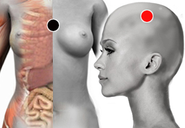

Rubeola
Par
timo - parietal
seno A ventricular - riñón

Generalidades:
Dolor de cabeza, Insomio, Malestar general, anorexia, mareos. Afecta al timo y puede afectar al pene. Puede provocar inmunodeficiencia (cero positivo). Puede afectar mácula del ojo, conjuntivitis, uveitis (lesión del nervio óptico).
Se asocia a cardiopatias, problemas psiquiátricos como esquizofrenia o falta de atención en niños.
Ahora es menos común la infección ya que casi todas las personas están vacunadas. Si hay infección, pocas veces causa complicaciones. Si la infección se presenta en el momento de la gestación, se puede presentar aborto expontáneo o el niño puede nacer con anomalías congénitas. No deben vacunarse las mujeres si ya están embarazadas.
Transmisión
Se adquiere por vía aérea, por cercanía con una persona infectada.